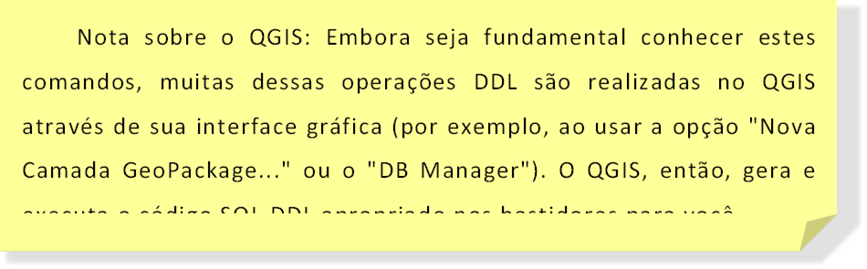

Capítulo 5: Os Subconjuntos da Linguagem SQL: DDL, DML e DQL
A linguagem SQL, apesar de ser tratada como uma coisa só, é na verdade organizada em subconjuntos lógicos de comandos, agrupados de acordo com a sua função principal. Compreender essa divisão torna o aprendizado muito mais estruturado, pois entendemos o propósito de cada comando que usamos. Os três principais subconjuntos que abordaremos são DDL, DML e DQL.
5.1 DDL – Data Definition Language (Linguagem de Definição de Dados)
A DDL é o conjunto de comandos responsável por definir e gerenciar a estrutura dos objetos no banco de dados. Pense na DDL como a "planta baixa" de um projeto: ela não lida com os dados em si, mas com os "recipientes" que irão armazená-los. É com a DDL que criamos, modificamos e excluímos as tabelas, definimos suas colunas, os tipos de dados e as restrições de integridade.
Os principais comandos DDL são:
5.1.1 O Comando CREATE TABLE
Este é o comando fundamental da DDL. Sua função é criar uma nova tabela no banco de dados. Ao executar CREATE TABLE, devemos especificar não apenas o nome da tabela, mas também todas as suas colunas, os tipos de dados de cada coluna e as restrições de integridade que se aplicam a elas.
Sintaxe Básica:
CREATETABLE nome_da_tabela (
nome_coluna1 TIPO_DE_DADO RESTRICOES,
nome_coluna2 TIPO_DE_DADO RESTRICOES,
...
nome_colunaN TIPO_DE_DADO RESTRICOES
);
Ø nome_da_tabela: O nome que você dará à sua tabela (ex: locais_coleta).
Ø nome_colunaX: O nome de cada campo da tabela (ex: municipio).
Ø TIPO_DE_DADO: O tipo de informação que a coluna armazenará (ex: TEXT, INTEGER, DATE).
Ø RESTRICOES: As regras que se aplicam àquela coluna (ex: PRIMARY KEY, NOT NULL).
Exemplo Prático:
Vamos escrever o comando para criar nossa tabela locais_coleta, que irá armazenar a parte espacial dos dados. Por ser uma tabela de locais, é uma boa prática ter um identificador único para cada local.
-- Cria a tabela para armazenar os locais de coleta de forma estruturada
CREATETABLE locais_coleta (
id_ponto INTEGERPRIMARY KEY, -- Define um ID numérico como chave primária
municipio TEXTNOT NULL, -- O nome do município é um texto e obrigatório
nome_local TEXTNOT NULL, -- O nome do local (praia/rio) é obrigatório
geometria GEOMETRY(Point, 4674) -- Coluna espacial para o ponto (SIRGAS 2000)
);
Neste exemplo, estamos criando uma tabela chamada locais_coleta com quatro colunas, aplicando os conceitos de tipos de dados e restrições que já vimos.
5.1.2 Comando ALTER TABLE
E se, depois de criar a tabela, percebermos que esquecemos uma coluna? O comando ALTER TABLE serve para modificar a estrutura de uma tabela já existente. Sua aplicação mais comum é adicionar, remover ou modificar colunas.
Sintaxe (para adicionar uma coluna):
ALTERTABLE nome_da_tabela
ADD COLUMN nome_da_nova_coluna TIPO_DE_DADO;
Exemplo Prático:
Vamos supor que decidimos adicionar uma coluna em locais_coleta para registrar quem foi o responsável pelo cadastro daquele ponto.
-- Adiciona uma nova coluna 'responsavel' à tabela existente
ALTERTABLE locais_coleta
ADD COLUMN responsavel TEXT;
5.1.3 O Comando DROP TABLE
Este é o comando mais perigoso da DDL. O DROP TABLE remove permanentemente uma tabela inteira, incluindo sua estrutura, todos os seus dados e índices. Uma vez executado, não há como voltar atrás.
Sintaxe:
DROPTABLE nome_da_tabela;
Exemplo Prático:
Se quiséssemos apagar completamente a tabela locais_coleta:
-- CUIDADO: Este comando apaga a tabela e todos os seus dados de forma irreversível!
DROPTABLE locais_coleta;

5.2 DML na Prática: Inserindo, Atualizando e Removendo Dados
Com a estrutura das tabelas definida pela DDL, o próximo passo é populá-las e gerenciá-las. É aqui que entra a DML, o conjunto de comandos para manipular os registros (as linhas) dentro das tabelas. Estas são as operações do dia a dia em um banco de dados, correspondendo ao Criar, Atualizar e Apagar do conceito CRUD.
5.2.1 O Comando INSERT INTO: Adicionando Novos Dados
O comando INSERT INTO é utilizado para adicionar um ou mais registros novos a uma tabela. É a forma como "alimentamos" o banco com informações.
Sintaxe Básica:
INSERT INTO nome_da_tabela (coluna1, coluna2, ..., colunaN)
VALUES (valor1, valor2, ..., valorN);
Ø nome_da_tabela: A tabela que receberá o novo registro.
Ø (coluna1, coluna2, ...): A lista de colunas que você irá preencher.
Ø VALUES (valor1, valor2, ...): Os valores correspondentes a cada coluna, na mesma ordem em que as colunas foram listadas.
Exemplo Prático:
Vamos inserir nosso primeiro registro na tabela locais_coleta, que criamos na seção anterior.
-- Insere o Ponto de Coleta da Praia de Canasvieiras, em Florianópolis
INSERT INTO locais_coleta (id_ponto, municipio, nome_local, geometria)
VALUES (
1,
'Florianópolis',
'Praia de Canasvieiras',
ST_GeomFromText('POINT(-48.4349 -27.4297)', 4674)
);
Neste comando, estamos inserindo uma linha com id_ponto igual a 1, municipio "Florianópolis", e assim por diante. Note que para a coluna geometria, utilizamos uma função espacial (ST_GeomFromText) para criar um dado do tipo Ponto a partir de um texto. Veremos mais sobre funções espaciais em capítulos futuros.
5.2.1.1 O Comando UPDATE: Modificando Dados Existentes
O comando UPDATE é utilizado para alterar valores em registros que já existem na tabela. É uma ferramenta poderosa para corrigir erros ou atualizar informações que mudaram com o tempo.
Atenção: O uso da cláusula WHERE no comando UPDATE é crucial. Se você esquecer a cláusula WHERE, o comando será aplicado a TODAS as linhas da tabela, o que pode levar à perda de dados em massa.
Sintaxe Básica:
UPDATE nome_da_tabela
SET coluna1 = novo_valor1, coluna2 = novo_valor2
WHERE condicao;
Ø SET: Indica quais colunas serão atualizadas e seus novos valores.
Ø WHERE: Especifica qual(is) registro(s) devem ser modificados.
Exemplo Prático:
Suponha que digitamos o nome do local errado no registro anterior. Vamos corrigi-lo.
-- Altera o valor da coluna 'nome_local' APENAS para o registro onde o id_ponto é 1
UPDATE locais_coleta
SET nome_local = 'Praia de Canasvieiras - Ponto Central'
WHERE id_ponto = 1;
5.2.1.2 O Comando DELETE FROM: Removendo Dados
O comando DELETE FROM é usado para remover um ou mais registros de uma tabela. Assim como o UPDATE, ele é extremamente poderoso e deve ser usado com máximo cuidado.
Atenção: A cláusula WHERE é ainda mais crítica no comando DELETE. Se você omitir a cláusula WHERE, TODOS os dados da tabela serão apagados permanentemente.
Sintaxe Básica:
DELETEFROM nome_da_tabela
WHERE condicao;
Exemplo Prático:
Vamos remover o ponto de coleta que acabamos de criar.
-- CUIDADO: Remove permanentemente o registro onde o id_ponto é 1
DELETEFROM locais_coleta
WHERE id_ponto = 1;
5.3 DQL na Prática: Consultando os Dados com SELECT
Chegamos à parte mais utilizada e poderosa do SQL para um técnico em geoprocessamento: a DQL (Linguagem de Consulta de Dados). É através do seu único comando, SELECT, que fazemos "perguntas" ao banco de dados para extrair, filtrar, ordenar e visualizar as informações que precisamos. Dominar o SELECT é a habilidade que transforma dados brutos em respostas e análises.
5.3.1 A Estrutura Essencial: SELECT e FROM
Toda consulta começa com duas perguntas básicas: O que eu quero ver? E de onde?
· SELECT: Especifica as colunas que você deseja exibir no resultado.
· FROM: Especifica a tabela da qual os dados serão extraídos.
Sintaxe para ver todas as colunas: Para visualizar todas as colunas de uma tabela, usamos o asterisco (*), um atalho muito útil para uma exploração inicial.
SELECT * FROM nome_da_tabela;
Sintaxe para ver colunas específicas: Para um resultado mais limpo e eficiente, você pode listar exatamente quais colunas deseja ver, separando-as por vírgula.
SELECT coluna1, coluna2, ... FROM nome_da_tabela;
Exemplo Prático: Vamos visualizar o município, o ponto de coleta e a data de todos os registros em nossa tabela relatorio_balneabilidade.
SELECT Municipio, "Ponto de Coleta", DataFROM relatorio_balneabilidade
Nota: Se o nome de uma coluna tiver espaços ou caracteres especiais, como "Ponto de Coleta", é uma boa prática colocá-lo entre aspas duplas.
5.3.2 Filtrando Resultados
Raramente queremos ver todos os dados de uma tabela. A cláusula WHERE é usada para filtrar os registros e retornar apenas aqueles que atendem a uma ou mais condições específicas. É aqui que usamos os operadores de comparação:
Os operadores de comparação são a base para construir a maioria das condições na cláusula WHERE. Eles permitem comparar os valores de uma coluna com um valor específico ou com os valores de outra coluna, resultando em uma expressão que é verdadeira ou falsa para cada registro.
Tabela 4‑1 : Operadores de Comparação
|
Operador |
Descrição |
Exemplo |
|
= |
Igual a |
WHERE Municipio = 'Bombinhas' |
|
!= ou <> |
Diferente de |
WHERE Condição != 'Própria' |
|
> |
Maior que |
WHERE "Temp Água" > 25 |
|
< |
Menor que |
WHERE "E. Coli NMP*/100ml" < 200 |
|
>= |
Maior ou igual a |
WHERE "Temp Ar" >= 30 |
|
<= |
Menor ou igual a |
WHERE "Resultado_Ecoli" <= 800 |
Exemplo Prático: Vamos selecionar todos os relatórios do município de Florianópolis onde a condição da água era 'Imprópria'.
SELECT * FROM relatorio_balneabilidade
WHERE Municipio = 'Florianópolis'AND Condição = 'Imprópria';
5.3.3 Combinando Filtros: Operadores Lógicos AND, OR e NOT
Para criar filtros mais complexos, combinamos condições usando operadores lógicos:
· AND: Retorna o registro se todas as condições forem verdadeiras.
· OR: Retorna o registro se pelo menos uma das condições for verdadeira.
· NOT: Nega a condição, retornando os registros que não atendem ao critério.
É uma boa prática usar parênteses () para garantir que as condições sejam avaliadas na ordem que você deseja.
Exemplo Prático: Queremos ver os registros de 'Bombinhas' OU 'Porto Belo' onde a temperatura da água estava acima de 22 graus.
SELECT"Balneário", "Ponto de Coleta", "Temp Água"
FROM relatorio_balneabilidade
WHERE (Balneário = 'Bombinhas'OR Balneário = 'Porto Belo') AND"Temp Água" > 22;
5.3.4 Ordenando os Resultados: A Cláusula ORDER BY
A cláusula ORDER BY é usada para organizar a visualização dos resultados da sua consulta com base em uma ou mais colunas.
· ASC: Ordem ascendente (do menor para o maior, A-Z). Este é o padrão.
· DESC: Ordem descendente (do maior para o menor, Z-A).
Exemplo Prático: Vamos listar todos os resultados, ordenando pelos maiores valores de E. Coli primeiro e, em caso de empate, pelo nome do município em ordem alfabética.
SELECT Municipio, "Ponto de Coleta", "E. Coli NMP*/100ml"
FROM relatorio_balneabilidade
ORDER BY"E. Coli NMP*/100ml"DESC, Municipio ASC;
5.3.5 Limitando o Número de Resultados: A Cláusula LIMIT
Quando uma tabela tem milhares de registros, é útil limitar a quantidade de linhas no resultado. O LIMIT faz exatamente isso.
Exemplo Prático: Para ver os 5 registros com a maior temperatura do ar registrada:
SELECT"Data", Municipio, "Temp Ar"
FROM relatorio_balneabilidade
ORDER BY"Temp Ar"DESC
LIMIT5;
5.4 DQL: Análises e Transformações de Dados
Além de simplesmente buscar e filtrar dados, o SQL permite transformá-los, limpá-los e resumi-los para gerar novos insights. Esta seção aborda as funções e cláusulas que elevam suas consultas de uma simples busca para uma poderosa ferramenta de análise.
5.4.1 Funções de Manipulação de Texto
Dados textuais raramente são perfeitos. Podem ter maiúsculas e minúsculas misturadas ou caracteres indesejados. As funções de texto nos ajudam a padronizar e limpar esses dados durante a consulta.
· UPPER() e LOWER(): Convertem um texto para maiúsculas ou minúsculas, respectivamente. Útil para padronizar dados antes de agrupar ou comparar.
Exemplo: SELECT UPPER(Municipio), ... retornaria 'FLORIANÓPOLIS'.
· REPLACE(): Substitui todas as ocorrências de uma parte de um texto por outra.
Exemplo: Para padronizar a condição, poderíamos usar REPLACE(Condição, 'Imprópria', 'NÃO RECOMENDADA').
5.4.2 CAST(): Convertendo Tipos de Dados
Muitas vezes, ao importar dados de fontes externas (como arquivos CSV), colunas que deveriam ser numéricas podem ser interpretadas como texto. Isso impede a realização de cálculos matemáticos (SUM, AVG) ou comparações numéricas (>, <). O comando CAST é a ferramenta para resolver isso, convertendo uma coluna de um tipo para outro durante uma consulta.
Sintaxe:
CAST(nome_da_coluna AS NOVO_TIPO_DE_DADO)
Exemplo Prático:
Suponha que a coluna "Temp Água" em nossa tabela relatorio_balneabilidade foi importada como TEXT. Não poderíamos calcular a média. Usando CAST, resolvemos o problema:
-- Calcula a temperatura média da água, convertendo a coluna para o tipo NUMERIC
SELECT AVG(CAST("Temp Água"ASNUMERIC)) AS media_temperatura
FROM relatorio_balneabilidade;
Neste exemplo, NUMERIC é um tipo de dado adequado para números com casas decimais.
5.4.3 ROUND():
Esta função é uma consequência natural do uso de AVG() ou de qualquer divisão. O melhor lugar para ela é na seção de agregações, logo após o exemplo da média.
5.4.4 LIKE:
Como vimos na seção de filtros, o LIKE é essencial para buscar padrões em texto, usando os curingas % (qualquer sequência de caracteres) e _ (um único caractere).
o Exemplo: WHERE "Ponto de Coleta" LIKE '%Norte%' buscaria todos os pontos que contêm a palavra "Norte" no nome.
5.4.5 Resumindo Dados: Funções de Agregação e GROUP BY
Frequentemente, a informação mais valiosa não está nos registros individuais, mas no resumo de um conjunto deles. As funções de agregação calculam um valor único a partir de múltiplas linhas.
Elas são quase sempre usadas com a cláusula GROUP BY, que agrupa as linhas com base em uma ou mais colunas, permitindo que a função de agregação seja calculada para cada grupo.
Principais Funções de Agregação:
· COUNT(): Conta o número de linhas. COUNT(*) conta todas as linhas;
· COUNT(coluna) conta as linhas onde a coluna não é nula.
· SUM(): Soma os valores de uma coluna numérica.
· AVG(): Calcula a média de uma coluna numérica.
· MIN(): Encontra o valor mínimo em uma coluna.
· MAX(): Encontra o valor máximo em uma coluna.
Exemplo Prático 1: Contar amostras por município Qual o número total de coletas realizadas em cada município?
SQL
SELECT
Municipio,
COUNT(*) AS total_de_coletas
FROM
relatorio_balneabilidade
GROUP BY
Municipio
ORDER BY
total_de_coletas DESC;
· GROUP BY Municipio: Agrupa todas as linhas pela coluna Municipio.
· COUNT(*): Conta quantas linhas existem em cada um desses grupos.
· AS total_de_coletas: AS é um alias, um apelido que damos à coluna de resultado para que a saída seja mais legível.
Exemplo Prático 2: Analisar resultados por condição Qual a média, o mínimo e o máximo de E. Coli para as águas 'Própria' e 'Imprópria'?
SELECT
Condição,
AVG("E. Coli NMP*/100ml") AS media_ecoli,
MIN("E. Coli NMP*/100ml") AS minimo_ecoli,
MAX("E. Coli NMP*/100ml") AS maximo_ecoli
FROM
relatorio_balneabilidade
GROUP BY
Condição;
5.4.6 Lógica Condicional: Classificando Dados com CASE WHEN
Em geoprocessamento, frequentemente precisamos classificar nossos dados em categorias com base em regras ou limiares. Por exemplo, classificar um rio como 'Poluído' ou 'Não Poluído' com base em um índice, ou um talude como de 'Alto Risco' ou 'Baixo Risco' com base na declividade. A estrutura CASE WHEN permite criar uma lógica "se... então... senão..." diretamente dentro da sua consulta SQL para criar novas colunas classificadas.
Sintaxe Básica:
CASE
WHEN condicao1 THEN resultado1
WHEN condicao2 THEN resultado2
...
ELSE resultado_padrao
END
Exemplo Prático: A legislação ambiental define que um ponto é 'Impróprio' se o valor de E. Coli na última amostragem for superior a 800 NMP/100ml. Vamos criar uma consulta que não apenas mostra o valor, mas também cria uma nova coluna chamada classificacao_risco com base nesse critério.
SELECT
Municipio,
"Ponto de Coleta",
"E. Coli NMP*/100ml",
CASE
WHEN"E. Coli NMP*/100ml" > 800THEN'RISCO ELEVADO (Impróprio)'
WHEN"E. Coli NMP*/100ml" > 200THEN'ESTADO DE ATENÇÃO'
ELSE'NÍVEL ACEITÁVEL'
ENDAS classificacao_risco
FROM
relatorio_balneabilidade
WHERE
Municipio = 'Florianópolis'
ORDER BY
"E. Coli NMP*/100ml"DESC;
Nesta consulta, estamos criando dinamicamente a coluna classificacao_risco. Esta é uma técnica extremamente útil para gerar dados para mapas temáticos no QGIS.
5.4.7 Unindo Tabelas: A Cláusula JOIN
A verdadeira força de um banco de dados relacional está na capacidade de conectar informações de tabelas diferentes. O JOIN é o comando que nos permite fazer isso. Vamos supor que temos nossa tabela relatorio_balneabilidade e a tabela locais_coleta (com a geometria). Para ver os dados de balneabilidade no mapa, precisamos uni-las.
O INNER JOIN (ou apenas JOIN) combina linhas de duas tabelas sempre que houver um valor correspondente em uma coluna em comum.
Sintaxe Básica:
SQL
SELECT colunas
FROM tabela_A AS a
JOIN tabela_B AS b ON a.coluna_em_comum = b.coluna_em_comum;
· ON: Especifica a condição da junção, ou seja, qual coluna é usada para "ligar" as duas tabelas.
· AS a e AS b: São aliases para as tabelas, tornando a consulta mais curta e legível.
Exemplo Prático: Vamos unir nossos dados de relatório com os locais de coleta para obter uma tabela com a geometria e os resultados juntos. Assumiremos que as colunas Municipio e "Ponto de Coleta" são as chaves para a união.
SQL
SELECT
lc.geometria,
r.Municipio,
r."Ponto de Coleta",
r.Data,
r."E. Coli NMP*/100ml",
r.Condição
FROM
relatorio_balneabilidade AS r
JOIN
locais_coleta AS lc
ON r.Municipio = lc.municipio AND r."Ponto de Coleta" = lc.nome_local;
Este comando retorna uma nova tabela virtual com os dados combinados, pronta para ser carregada como uma camada no QGIS e visualizada espacialmente.
5.5 Dicas e Boas Práticas ao Escrever SQL
* Comentários em SQL: -- Seu comentário
* Indentação e formatação para facilitar a leitura de consultas longas.
* Uso de maiúsculas e minúsculas (SQL geralmente não é sensível a maiúsculas/minúsculas para palavras-chave, mas pode ser para nomes de tabelas/colunas dependendo do SGBD e da configuração).
* Testar consultas em pequenas partes.

I. Selecionar colunas específicas: Quando você já sabe quais informações precisa, é mais eficiente e claro especificar os nomes das colunas desejadas, separando-os por vírgulas.
Substitua nome_coluna1, nome_coluna2, etc., pelos nomes reais das colunas da sua tabela.
5.5.1 Primeiros Exemplos Práticos
Vamos imaginar que temos duas tabelas em nosso banco de dados: uma chamada municipios e outra chamada pontos_coleta.
Tabela municípios: Esta tabela armazena informações sobre os municípios. (Campos hipotéticos: id_municipio, nome_municipio, uf, populacao_estimada, area_km2)
Tabela 4‑2: Tabela ‘municípios’
|
id_municipio |
nome_municipio |
uf |
populacao_estimada |
area_km2 |
|
1 |
Florianópolis |
SC |
537213 |
675.4 |
|
2 |
São José |
SC |
270295 |
150.5 |
|
3 |
Palhoça |
SC |
236642 |
395.1 |
|
4 |
Biguaçu |
SC |
76698 |
369.8 |
Tabela pontos_coleta: Esta tabela armazena informações sobre pontos de coleta de resíduos (sem dados de geometria, por enquanto). (Campos hipotéticos: id_ponto, nome_ponto, tipo_material_coletado, endereco_completo, bairro)
Tabela 4‑3: Exemplo de uma tabela ‘pontos_coleta’
|
id_ponto |
nome_ponto |
tipo_material_coletado |
endereco_completo |
bairro |
|
101 |
EcoPonto Central |
Plástico, Papel, Vidro |
Rua das Palmeiras, 123 |
Centro |
|
102 |
Coleta Seletiva Trindade |
Metal, Orgânicos |
Av. Principal, 456, Próximo à Praça |
Trindade |
|
103 |
Ponto Verde Continente |
Papelão, Plástico |
Rua das Acácias, 789 |
Estreito |
Exemplo 1: Consultar todos os dados da tabela de municípios
Se quisermos ver todas as informações disponíveis para todos os municípios cadastrados, usaríamos:
Resultado esperado: Uma tabela com todas as colunas (id_municipio, nome_municipio, uf, populacao_estimada, area_km2) e todas as linhas (registros de municípios) da tabela municipios.
Exemplo 2: Consultar nome e UF dos municípios
Se estivermos interessados apenas no nome do município e na sua respectiva Unidade Federativa (UF):
Resultado esperado: Uma tabela com duas colunas, nome_municipio e uf, contendo os nomes e UFs de todos os municípios.
Exemplo 3: Consultar todos os dados da tabela de pontos de coleta
Para visualizar todas as informações sobre os pontos de coleta:
Resultado esperado: Uma tabela com todas as colunas (id_ponto, nome_ponto, tipo_material_coletado, endereco_completo, bairro) e todas as linhas da tabela pontos_coleta.
Exemplo 4: Consultar o nome do ponto de coleta e o tipo de material que ele recebe
Se quisermos saber apenas o nome de cada ponto de coleta e o tipo de material que ele aceita:
Resultado esperado: Uma tabela com duas colunas, nome_ponto e tipo_material_coletado, para todos os pontos de coleta registrados.
Estes exemplos demonstram a simplicidade e o poder das cláusulas SELECT e FROM. Dominar seu uso é o primeiro e mais crucial passo para interagir efetivamente com bancos de dados SQL e extrair as informações necessárias para suas análises e aplicações. Nas próximas seções, exploraremos como refinar essas consultas para obter resultados ainda mais específicos.
5.5.2 Operadores de Comparação
Os operadores de comparação são a base para construir a maioria das condições na cláusula WHERE. Eles permitem comparar os valores de uma coluna com um valor específico ou com os valores de outra coluna, resultando em uma expressão que é verdadeira ou falsa para cada registro.
Exemplos Práticos com Operadores de Comparação:
Selecionar todos os municípios cuja população estimada seja superior a 500.000 habitantes:
SELECT nome_municipio, populacao_estimada
FROM municipios
WHERE populacao_estimada > 500000;
Listar os pontos de coleta que não estão no bairro "Centro":
SELECT nome_ponto, bairro, endereco_completo
FROM pontos_coleta
WHERE bairro != 'Centro';
Esses operadores são aplicáveis a diversos tipos de dados, incluindo números, textos e datas, embora a forma de especificar os valores para comparação possa variar (por exemplo, textos e datas geralmente são colocados entre aspas simples).
5.5.2.1 Trabalhando com Textos
Frequentemente, ao filtrar dados, precisamos comparar ou buscar por valores textuais. A cláusula WHERE oferece operadores específicos para lidar com strings (textos), permitindo desde comparações exatas até buscas por padrões.
Comparação Exata de Strings
Para encontrar registros onde uma coluna de texto corresponde exatamente a um valor específico, utilizamos o operador de igualdade (=). O valor de texto que você está procurando deve, geralmente, ser colocado entre aspas simples (' ').
· Exemplo: Selecionar todos os municípios do estado de Santa Catarina (SC) da tabela municipios.
· SELECT *
· FROM municipios
· WHERE uf = 'SC';
·
Resultado Esperado: Retornaria todas as colunas dos municípios onde a coluna uf é exatamente "SC".
É importante notar que, em muitos SGBDs, a comparação exata com = é sensível a maiúsculas e minúsculas (case-sensitive). Portanto, uf = 'sc' poderia não retornar os mesmos resultados que uf = 'SC', dependendo da configuração do banco de dados.
O Operador LIKE para Busca de Padrões (com % e _)
Quando você não sabe o valor exato de um texto ou precisa encontrar registros que sigam um determinado padrão, o operador LIKE é a ferramenta ideal. Ele é usado em conjunto com caracteres curinga:
· % (Porcentagem): Representa zero, um ou múltiplos caracteres quaisquer.
· _ (Sublinhado): Representa um único caractere qualquer.
Exemplos com %:
1. Selecionar municípios cujos nomes começam com "Flor":
2. SELECT nome_municipio, uf
3. FROM municipios
4. WHERE nome_municipio LIKE 'Flor%';
5.
6. Encontrar pontos de coleta cujo endereço contenha a palavra "Avenida":
7. SELECT nome_ponto, endereco_completo
8. FROM pontos_coleta
9. WHERE endereco_completo LIKE '%Avenida%';
10.
Exemplos com _:
1. Selecionar municípios cuja UF comece com "S" e tenha um segundo caractere qualquer:
2. SELECT nome_municipio, uf
3. FROM municipios
4. WHERE uf LIKE 'S_';
5.
Uma característica importante do operador LIKE no SQLite (base do GeoPackage) é que, por padrão, ele é insensível a maiúsculas e minúsculas para caracteres ASCII.
5.5.2.2 Combinando Condições com Operadores Lógicos
Muitas vezes, uma única condição não é suficiente para filtrar os dados da maneira que precisamos. Nesses casos, podemos combinar múltiplas condições usando operadores lógicos. Os principais operadores lógicos são AND, OR e NOT.
Operador AND
O operador AND é usado para combinar duas ou mais condições. Para que um registro seja incluído no resultado, todas as condições ligadas por AND devem ser verdadeiras.
· Sintaxe: WHERE condicao1 AND condicao2
· Exemplo: Selecionar todos os municípios de Santa Catarina ('SC') que tenham uma população estimada maior que 200.000 habitantes.
· SELECT nome_municipio, uf, populacao_estimada
· FROM municipios
· WHERE uf = 'SC' AND populacao_estimada > 200000;
·
Neste caso, um município só aparecerá no resultado se AMBAS as condições (ser de SC E ter população > 200.000) forem satisfeitas.
Operador OR
O operador OR também combina duas ou mais condições. No entanto, para um registro ser incluído no resultado, pelo menos uma das condições ligadas por OR deve ser verdadeira.
· Sintaxe: WHERE condicao1 OR condicao2
· Exemplo: Listar os pontos de coleta que estão localizados no bairro 'Centro' OU cujo tipo de material coletado inclua 'Vidro'.
· SELECT nome_ponto, bairro, tipo_material_coletado
· FROM pontos_coleta
· WHERE bairro = 'Centro' OR tipo_material_coletado LIKE '%Vidro%';
·
Aqui, um ponto de coleta será listado se estiver no Centro, ou se coletar Vidro, ou ambos.
Operador NOT
O operador NOT é usado para negar uma condição, ou seja, para selecionar registros que não satisfazem a condição especificada.
· Sintaxe: WHERE NOT condicao
· Exemplo: Selecionar todos os municípios de Santa Catarina ('SC'), exceto 'Florianópolis'.
· SELECT nome_municipio, uf
· FROM municipios
· WHERE uf = 'SC' AND NOT nome_municipio = 'Florianópolis';
·
Isso é equivalente a usar o operador de diferença: WHERE uf = 'SC' AND nome_municipio != 'Florianópolis';
Uso de Parênteses para Controlar a Ordem de Avaliação
Quando você combina múltiplos operadores lógicos (AND, OR) em uma única cláusula WHERE, a ordem em que eles são avaliados pode afetar o resultado. Assim como na matemática, você pode usar parênteses () para agrupar condições e controlar a ordem de precedência, garantindo que a lógica da sua consulta seja interpretada corretamente.
· Exemplo: Selecionar municípios que sejam de Santa Catarina ('SC') OU do Paraná ('PR') E que tenham uma população estimada menor que 100.000 habitantes.
Sem parênteses, a consulta WHERE uf = 'SC' OR uf = 'PR' AND populacao_estimada < 100000 poderia ser interpretada de forma ambígua (normalmente, AND tem precedência sobre OR). Com parênteses, a intenção fica clara:
SELECT nome_municipio, uf, populacao_estimada
FROM municipios
WHERE (uf = 'SC' OR uf = 'PR') AND populacao_estimada < 100000;
Neste caso, primeiro avalia-se se o município é de SC ou PR. Se essa condição for verdadeira, então verifica-se se a população é menor que 100.000.
A combinação inteligente de operadores de comparação e lógicos, juntamente com o uso adequado de parênteses, permite construir filtros extremamente específicos e poderosos em suas consultas SQL.
5.5.3 Ordenando os Resultados: A Cláusula ORDER BY
* Objetivo: Apresentar os dados de forma organizada.
* Ordenação ascendente (padrão): ASC
* Ordenação descendente: DESC
* Ordenando por uma ou múltiplas colunas.
* Exemplos práticos:
* Listar municípios por nome em ordem alfabética.
* Mostrar as medições da mais recente para a mais antiga.
5.5.4 5. Limitando a Quantidade de Resultados: A Cláusula LIMIT
* Utilidade: Visualizar apenas um subconjunto dos dados (útil para tabelas grandes).
* LIMIT numero_de_linhas
* (Opcional, dependendo da profundidade): OFFSET para paginação.
* Exemplos práticos:
* Mostrar apenas os 10 primeiros registros de uma consulta.
5.5.5 6. Funções Agregadas: Resumindo Informações
* O que são funções agregadas?
* COUNT(): Contar o número de registros (ou valores não nulos).
* SUM(): Somar valores de uma coluna numérica.
* AVG(): Calcular a média de valores de uma coluna numérica.
* MIN(): Encontrar o menor valor em uma coluna.
* MAX(): Encontrar o maior valor em uma coluna.
* A Cláusula GROUP BY: Agrupando dados antes de aplicar funções agregadas.
* Fundamental para obter estatísticas por categoria.
* Exemplos práticos:
* Contar quantos pontos de coleta existem em cada município.
* Calcular a média de um parâmetro de medição.
* Encontrar a data da medição mais antiga e mais recente.
5.5.6 7. Combinando Dados de Múltiplas Tabelas: Junções (JOINs)
* Revisão: O conceito de chaves primárias e estrangeiras e como elas relacionam tabelas.
* A necessidade de combinar dados que estão em tabelas separadas.
* INNER JOIN (ou simplesmente JOIN):
* Como funciona: Seleciona registros que têm valores correspondentes em ambas as tabelas.
* Sintaxe: FROM tabelaA JOIN tabelaB ON tabelaA.coluna_chave = tabelaB.coluna_chave
* Uso de AS (apelidos) para nomes de tabelas e colunas para simplificar e clarificar as consultas.
* (Opcional, para um curso mais aprofundado): LEFT JOIN, RIGHT JOIN, FULL OUTER JOIN. Para iniciantes, INNER JOIN é o mais crucial.
* Exemplos práticos:
* Juntar dados de uma tabela de "pontos de coleta" com uma tabela de "medições" para ver todos os dados de uma coleta específica.
* Combinar uma camada de "escolas" com uma tabela de "número de alunos" por escola.
5.5.7 8. (Opcional neste capítulo ou como introdução para o próximo) Noções de Consultas Espaciais
* Breve menção de que bancos de dados espaciais (como GeoPackage com extensões espaciais ou PostGIS) possuem funções SQL específicas para analisar relações espaciais (proximidade, intersecção, área, etc.).
* Exemplos muito simples, se o ambiente GeoPackage/SQLite permitir de forma fácil, ou apenas citar nomes de funções comuns em PostGIS como ST_Intersects, ST_Distance, ST_Area.
* Este tópico pode ser mais aprofundado num capítulo dedicado a funções espaciais, como o "Capítulo 4 – Funções espaciais básicas" que já existe no esboço da tua apostila.
Exercícios Práticos ao Longo do Capítulo:
* Após cada conceito importante, incluir pequenos exercícios para os alunos praticarem.
* No final do capítulo, propor um ou dois desafios mais completos que envolvam vários dos conceitos aprendidos.
5.6 Funções espaciais básicas
5.6.1 Funções espaciais
Linguagem SQL para medições - ST_Transform
• É usada para projetar os dados geográficos em outras projeções.
Sintaxe
ST_Transform(geomA,srid)
Exemplo de consulta com ST_DWithin para verificar proximidade entre pontos:
SELECT *
FROM pontos_interesse
WHERE ST_DWithin(geom, ST_SetSRID(ST_Point(-48.55, -27.60), 4326), 500);
5.7 Camada Virtual X Consulta
• Embora as camadas virtuais sejam uma ótima ferramenta para montar consultas rápidas e dinâmicas dentro do QGIS, na prática, elas têm causado travamentos com mais frequência.
• Esses travamentos ocorrem principalmente porque a camada virtual depende que as outras camadas estejam carregadas no projeto.
• Em contrapartida, quando utiliza-se a consulta SQL (“Carregar como Camada”), o QGIS trata o resultado como uma camada comum — mesmo que seja fruto de uma junção ou filtro — e trabalha com muito mais estabilidade. A performance melhora, e o risco de congelamento ou falhas diminui.
5.8 Criando uma Consulta
• 🛠️ Abra o DB Manager: No QGIS, vá em Banco de Dados > DB Manager.
• 📝 Selecione o banco de dados GeoPackage: Navegue até o seu arquivo .gpkg.
💻 Clique em “Executar”: Execute a consulta SQL desejada.
👁️ Visualize os dados: confira o resultado na tabela para garantir que a união foi feita corretamente.
SELECT *
FROM Locais_Coleta as l
JOIN Relatorio_Balneabilidade_2024 as r
ON l.MUNICIPIO = r.MUNICIPIO
AND l.PONTO_NOME = r.PONTO_NOME